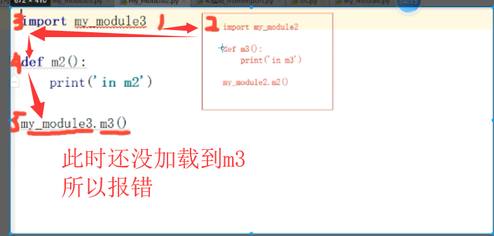

紧接着的是from xx import xx 语法
1 ################
2 from my_moudule import name
3 print(name)
4
5 name='123'
6 print(name)
7
8 from my_module import name
9 print(name)
10
11
12
13 from my_module import name,read1,read2 #导入模块中多个变量
14
15
16 from my_mosule import nam as n,read1 as r1,read2 as r2 #重命名
17
18 ####---------星号的用法----------#####
19 from my_module import * #导入模块中所有的名字
20
21
22 #在被导入模块中不希望被全部导入 可以定义一个参数名为__all__的参数列表
23
24 __all__=['name','read1','read2']
25
26
27 #这样，即使当前模块导入了该模块所有的名字，也只能调用__all__列表中的名字
28 ########3---------------------------------------######
29
30
31
32
33
34
35 ################################
36 这种方式导入 的包调用时可以假象成在当前模块定义的变量，调用方便
pyc:当文件被当作模块调用时会自动产生pyc文件，python文件被编译后就得到pyc(二进制)文件，再次被调用时，就不用再次编译，直接引用，
1 pyc文件的优点：
2 1，python为了提高运行效率也会进行编译，python是解释型语言，运行的时候需要通过python解释器编译，所以先编译出pyc文件后，可以节省编译这一步的耗时时间。
3
4 2，不想让源码泄露，因为py文件是可以直接看到源码的，对于一般的商业公司来说，这有点不妙，因为pyc文件可以独立于py文件，删除py文件也不会出错。这就是太好了，只需要编译成pyc文件再发布出去就好了。
############
import file_1
print(file_1.name)
##修改源文件name
import file_1
print(file_1.name) #####结果不会受影响，依旧是最开始的值，，
原因：import不会多次导入一个模块，即便有改动，也检测不到
非要强制修改可使用importlib模块中的reload方法
from importlib import reload
******
*****
**
reload(file_1)
*****
****
**
#结果就会更改了 不 要 经 常 用！！！！现有 A B 两个文件，Ａ引用了B ，B同时也引用了A，这就是循环引用，要避免这种设计

五：dir(模块)
dir(模块) ：可以获取到这个模块中所有的名字，可以使用反射的方法对元素进行操作，因为是以字符串形式返回的
含有一个__init__.py的文件夹就是一个包，包中通常含有一些py文件，一般包是给我们提供复杂功能的功能
在python2中需要注意的是，如果建的文件选择的不是文件包，不会产生__init__.py文件，会出现导入不成功的错误！！！
手动建立这个文件就可以。导入包的过程中自动执行了__init__.py文件
1 #############从包中导入模块的两种方法
2
3 同包当中导入模块
4
5 ##########111111
6 import
7
8 #import 包.包.包.包.包.包.包.模块
9 #最终是要精确到模块才行
10
11
12
13
14
15
16
17
18 from import#####个人推荐
19
20 from 包.包.包.包 import 模块 #把包和模块分离 且调用更方便
21 app.get() #模块名.方法
22 from 包.包.包.包.包.模块 import 方法 #具体到模块以下，，直接调用方法
23 get()#直接方法名即可
2.3、导入包：
如图所示的导入，虽然能成功导入，却无法使用这个包中的模块或者工具集
原因是路径问题，
包导入的绝对（路径）导入：是我们在导入包需注意的一点，要以根节点为起点导入
缺点：每次移动模块都需要重新修改路径
优点：模块可以单独执行
1 ######目录结构###
2 2
3 3 ---/
4 4 |
5 5 |
6 6 glance2——
7 7 | |
8 8 | |——__init__.py ----->(from glance2 import api )
9 9 | |
10 10 | api——
11 11 | |
12 12 | |——__init__.py--------->(from glance2.api import policy)
13 13 | |
14 14 | |——policy.py ------->(def get(): print("123"))
15 15
16 16 ######################glance3同级目录可调用
17
18 import glance2 #执行了glance2下的__init__.py文件
19 glance2.api #找不到方法
20
21 #报错 ，如上图所示
22 sys.path中的内容，永远是当前执行文件的路径
23
24 按上图路径配置即可
25
26 每个路径都明明白白写清楚，清晰看到目录结构，方便后续开发
包导入的相对（路径）导入：(.)表示当前目录，，(..)上级目录
优点：文件夹有移动也不会影响整个程序，只要能找到最相对根目录就可以导入
缺点：只要带相对路径导入的模块，就无法单独执行，只能当作模块给别人提供服务 1 ######目录结构###即使后面的开发工作中文件夹，，，文件夹有移动也不会影响整个程序
2
3 ---/
4 |
5 |
6 glance3——
7 |
8 |——__init__.py ----->(from . import api) #相对导入
9 |
10 api——
11 |
12 |——__init__.py--------->(from . iport policy) #相对导入
13 |
14 |——policy.py ------->(def get(): print("123"))
15
16 ######################glance3同级目录可调用
17 import glance3
18 glance3.api.policy.get()
19
20
21
22 123